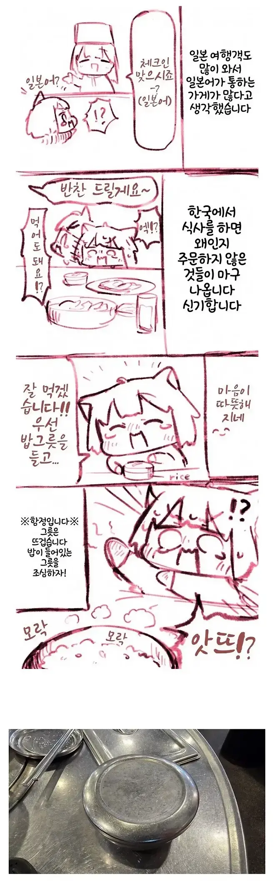

한국에 처음 여행 온 일본인들이 잘 당하는 함정
댓글
돌솥비빔밥은 큰일난다고
크아아아악 불타는짤
그건 우리도 뜨거워서 건드려봅니다
요즘에는 이중스뎅이라 뜨겁지 않는 밥그릇도 나옴 ...
그건 밥양이 적어..난 차라리 뜨거운게 좋아..
ㅇㅇ 나도 구형이 더 좋아 .... 어차피 내가 밥그릇을 들고 먹을것도 아니고
국밥에 밥을 투하할때도 얼른 넣어버리니깐 ...
나도 그리고 빨리 식어서 국밥 먹을때는 진짜 좋음
ㄹㅇ 왠지 국에 밥말때는 뭔가 식어서 수분 날라가있는게 더 좋더라
일제에 수탈당하지 않게 뜨거운 밥공기를 준비
일제 30년의 복수
저건 우리도 당해요
뒤집은채로 뚜껑놓치고 떨구는순간 좆됨ㅋㅋ
??? : 안매워요~
뚝배기 안나온걸 다행으로 생각하십시오